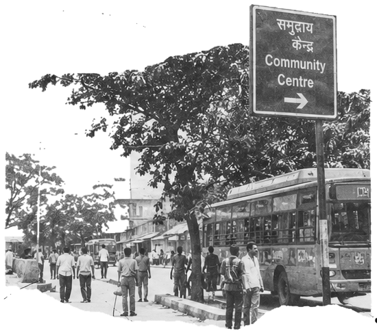

BigQuestions!
(in small print)
Hi, I’m Juhi! I’m interested in public policy, social change and the relationship between institutions, individual behaviour and collective outcomes.

(in small print)
Hi, I’m Juhi! I’m interested in public policy, social change and the relationship between institutions, individual behaviour and collective outcomes.
